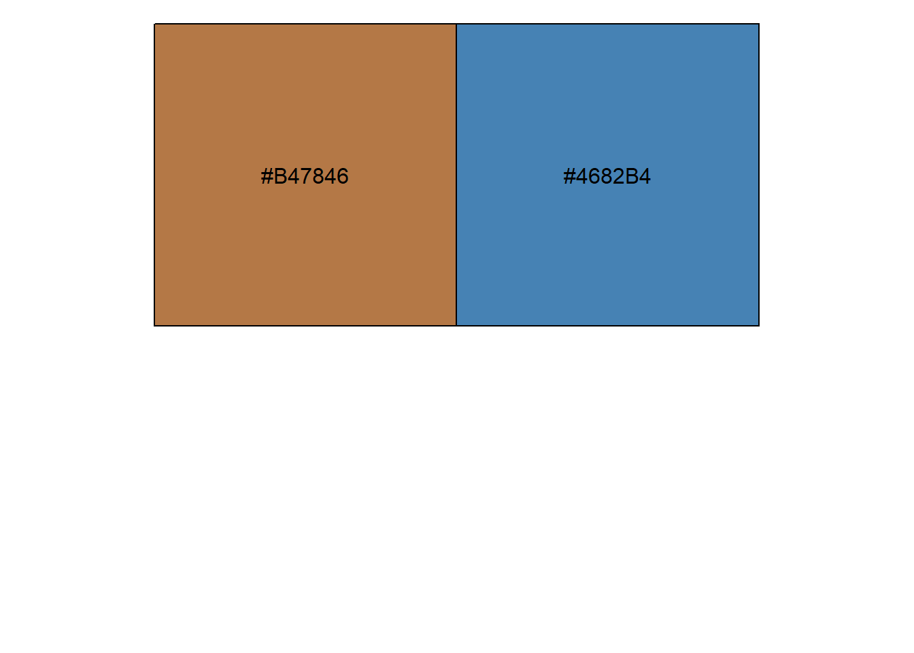

简介
1
前言
1.1
2
基础语法
2.1
数据结构
2.1.1
向量（一维数据）
2.1.2
时间日期
2.1.3
识别日期时间
2.2
控制结构
2.2.1
分支结构
2.2.2
循环结构
2.3
apply函数组
2.3.1
apply
2.3.2
lapply
2.3.3
sapply
2.3.4
vapply
2.4
自定义函数
2.4.1
函数设置
3
数据操作
3.1
数据连接
3.1.1
合并行与和并列
3.1.2
根据值匹配合并数据框
3.1.3
实现R中实现stata的merge命令
3.2
数据操作
3.2.1
选择列（select）
3.2.2
选择列语法
3.2.3
选择列的例子
3.2.4
用“-” 删除列
3.2.5
调整列的顺序
3.2.6
重命名列
3.3
分组汇总
3.3.1
创建分组
3.3.2
分组汇总
3.3.3
自己的例子
3.4
其他数据操作
3.4.1
按行汇总
3.4.2
窗口函数
3.5
整洁计算
3.5.1
数据屏蔽与整洁选择
4
可视化与建模
4.1
ggplot2基础语法
4.1.1
ggplot2概述
4.1.2
数据、映射、几何对象
4.1.3
标度
4.1.4
统计变换(Statistics)
4.1.5
坐标系(Coordinante)
4.1.6
位置调整(Position adjustments)
4.1.7
分面(Facet)
4.1.8
主题(theme)
4.1.9
输出(output)
4.1.10
export包(将ggplot或latice输出为PPT)
4.2
自定义ggplot2函数
4.2.1
为什么要自定义ggplot函数
4.2.2
单个组件
4.2.3
多个组件
4.3
散点图
4.3.1
密度散点图
4.4
生存分析
4.5
Plotly
4.5.1
将ggplot对象转化为plotly对象
I 文档沟通
5
Markdown
5.1
简介
5.2
行内格式
5.2.1
强调、上下标和行内代码
5.2.2
超链接
5.2.3
插入引用citations
5.2.4
换行空格
5.3
块级元素
5.3.1
代码块
5.3.2
标题
5.3.3
分割线
5.3.4
块级元素引用（段落引用）
5.3.5
列表
5.4
行内块元素
5.4.1
图片
5.5
数学公式
5.5.1
Markdown如何显示数学公式
5.5.2
数学公式的类别
5.5.3
具体公式
5.5.4
6
RMarkdown
6.1
RMarkdown简介
6.2
安装
6.3
基础
6.3.1
RMarkdown基础
6.3.2
编写R Markdown文档
6.3.3
备忘清单（Cheat sheet）
6.3.4
输出格式
6.3.5
R代码块和R行内代码
6.3.6
插入图片
6.3.7
表格
6.3.8
行内代码
6.3.9
在RMarkdown使用其他语言
6.3.10
交互式文档
6.4
文档格式（HTML,PDF,Word…）
6.4.1
HTML
6.4.2
目录（Table of contents）
6.4.3
小节编号Section numbering
6.4.4
Tabbed sections
6.4.5
外观和样式（Appearance and style）
6.4.6
图片选项（Figure options）
6.4.7
数据框显示（Data frame printing）
6.4.8
代码折叠（Code folding）
6.4.9
MathJax数学公式的支持
6.4.10
文档依赖关系（Document dependencies）
6.4.11
保留
md
文件
6.4.12
Includes
6.4.13
自定义模板
6.4.14
Markdown extensions
6.4.15
Pandoc参数
6.4.16
共享选项设置（Shared options）
6.4.17
HTML 片段（ HTML fragments）
7
Bookdown
7.1
简介
7.2
创建图书
7.3
编辑图书（Editing）
7.3.1
构建图书（Build the book）
7.3.2
预览章节（Preview a chapter）
7.3.3
Serve the book
7.4
项目结构
7.4.1
首页文件（Index file）
7.4.2
Rmd文件（ Rmd files）
7.4.3
_bookdown.yml
7.4.4
_output.yml
7.5
Markdown extensions
7.5.1
公式编号
7.5.2
定理和证明（Theorems and proofs）
7.5.3
特殊标题（Special headers）
7.5.4
文本引用（Text references）
7.5.5
交叉引用
7.6
输出格式
8
写轮眼
8.1
前期配置
8.2
键盘快捷键
8.3
幻灯片格式
8.3.1
幻灯片的属性
8.3.2
首页标题幻灯片
8.3.3
内容类
8.3.4
出现动画
8.3.5
演讲者注释
8.3.6
yolo(you only live once)
8.4
建立和预览幻灯片
8.5
独立HTML输出设置
8.6
CSS和主题
8.7
一些提示和小技巧
8.7.1
自动放映
8.7.2
倒计时计时器
8.7.3
高亮代码行
8.7.4
离线模式
8.7.5
宏指令Macros
8.7.6
打印PDF
8.8
总结术语
9
数据集介绍
9.1
mpg数据集
10
附录
10.1
颜色
11
附录
11.1
颜色
12
正则表达式
12.1
grep函数
12.1.1
函数参数
12.1.2
模式（pattern）与匹配（match）
12.2
元字符
12.3
常用文本处理函数
12.4
案例
12.4.1
查找指定目录下的jpg图像文件（list.files函数）
12.4.2
全宋词
12.4.3
SCI（筛选行）
R语言编程
11
附录
11.1
颜色
二元配色
library
(scales)
show_col
(
c
(
"#B47846"
,
"#4682B4"
))

可用于KM曲线